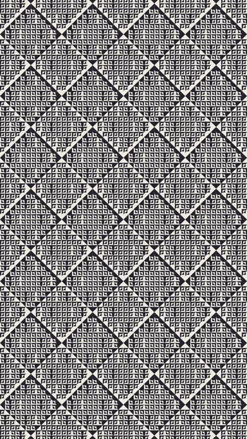
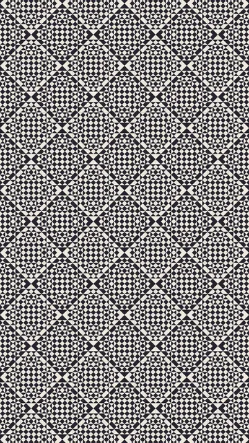
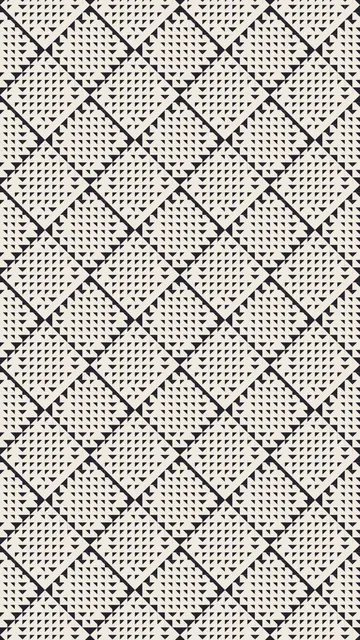
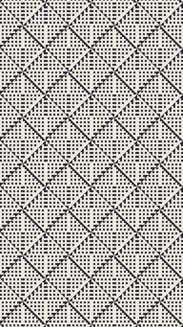
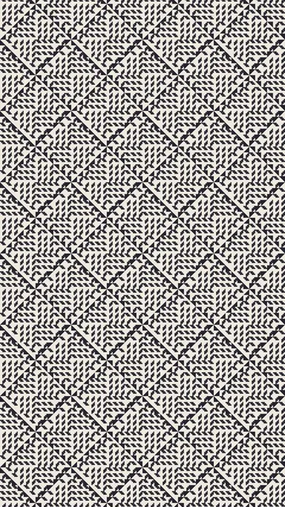

คอลเลกชัน CCE

ภาษาอื่น: Français · English · Español · 简体中文 · Русский · Português · हिन्दी
กลุ่มที่ 4 จาก 6 · 5 แอนิเมชัน
รูปหลายเหลี่ยมที่อ่านได้จากทิศทางของมัน ไม่มีสิ่งใดโหลดก่อนการคลิก และเล่นได้ครั้งละหนึ่งแอนิเมชันเท่านั้น คุณสามารถดูตัวอย่างแต่ละแอนิเมชันด้วยความเร็วหรือสีอื่นได้




